컴퓨터활용능력-1급 (2015-03-07 기출문제)
1과목: 컴퓨터 일반
1. 다음 중 멀티미디어와 관련된 그래픽 기법에 관한 설명으로 옳은 것은?
- 안티앨리어싱(Anti-Aliasing)은 제한된 색상을 조합하여 복잡한 색이나 새로운 색을 만드는 작업이다.
- 모델링(Modeling)은 3차원 애니메이션을 만드는 과정중의 하나로 물체의 모형에 명암과 색상을 입혀 사실감을 더해 주는 작업이다.
- 모핑(Morphing)은 2개의 이미지를 부드럽게 연결하여 변환 또는 통합하는 것으로 컴퓨터 그래픽, 영화등에서 많이 사용된다.
- 랜더링(Rendering)은 이미지 가장자리의 톱니 모양 같은 계단 현상을 제거하여 경계선을 부드럽게 하는 필터링 기술이다.
(정답률: 83%)

2. 다음 중 인터넷 해킹과 관련하여 스니핑(Sniffing)에 관한 설명으로 옳은 것은?
- 네트워크를 거쳐 전송되는 패킷 정보를 읽어 계정과 암호를 알아내는 행위이다.
- 프로그램이 정상적인 상태로 유지되는 것처럼 믿도록 속임수를 사용하는 행위이다.
- 자기 복제를 하는 프로그램으로 특정 대상을 파괴하는 행위이다.
- 컴퓨터 사용자 몰래 다른 파일에 자신의 코드를 복사하는 행위이다.
(정답률: 82%)
3. 다음 중 이미지와 그래픽에서 사용되는 비트맵 방식의 파일 형식에 관한 설명으로 옳지 않은 것은?
- 픽셀(Pixel)로 이미지를 표현하며 이미지를 확대하면 테두리가 거칠어 진다.
- Windows에서 표준으로 사용되는 방식으로 복원한 데이터가 압축 전의 데이터와 완전히 일치하는 무손실 압축을 사용한다.
- 래스터 방식이라고도 하며 다양한 색상을 사용하므로 사실 같은 이미지를 표현할 수 있다.
- 파일 형식에는 BMP, GIF, JPG 등이 있다.
(정답률: 66%)
4. 다음 중 인터넷 서비스와 관련하여 FTP 서비스에 관한 설명으로 옳지 않은 것은?
- FTP 서버에 파일을 전송 또는 수신, 삭제, 이름 바꾸기 등의 작업을 할 수 있다.
- FTP 서버에 있는 프로그램은 접속 후에 서버에서 바로 실행시킬 수 있다.
- 익명(Anonymous) 사용자는 계정이 없는 사용자로 FTP 서비스를 이용할 수 있다.
- 기본적으로 그림 파일은 Binary 모드로 텍스트 파일은 ASCII 모드로 전송한다.
(정답률: 60%)
5. 다음 중 HDD의 인터페이스 표준에 해당하지 않는 것은?
- EIDE
- SCSI
- VESA
- SATA
(정답률: 70%)
6. 다음 중 용어에 대한 설명으로 옳지 않은 것은?
- Ubiquitous : 시간과 장소에 상관없이 자유롭게 네트워크에 접속할 수 있는 정보 통신 환경
- Wibro : 고정된 장소에서 초고속 인터넷을 이용할 수 있는 무선 휴대 인터넷 서비스
- VoIP : 음성 데이터를 인터넷 프로토콜 데이터 패킷으로 변화하여 일반 데이터망에서 통화를 가능하게 해주는 통신서비스 기술
- RFID : 전파를 이용해 정보를 인식하는 기술로 출입 관리, 주차 관리에 주로 사용
(정답률: 83%)
7. 다음 중 인터넷에서 방화벽을 사용하는 이유로 적절하지 않은 것은?
- 외부로부터 허가받지 않은 불법적인 접근이나 해커의 공격으로부터 내부의 네트워크를 효과적으로 보호할 수 있다.
- 방화벽의 접근제어, 인증, 암호화와 같은 기능으로 네트워크를 보호 할 수 있다.
- 역추적 기능이 있어서 외부의 침입자를 역추적하여 흔적을 찾을 수 있다.
- 방화벽을 이용하면 외부의 보안이 완벽하며, 내부의 불법적인 해킹도 막을 수 있다.
(정답률: 89%)
8. 다음 중 Windows 7의 [제어판]에서 화면 설정과 관련된 [디스플레이]와 [개인 설정]에 대한 설명으로 옳지 않은 것은?(윈도우 7 전용 문제로 참고용으로만 사용하세요.)
- [디스플레이]에서 화면 해상도를 설정할 수 있다.
- [디스플레이]에서 화면에 표시되는 텍스트 크기 및 기타 항목을 변경할 수 있다.
- [개인 설정]에서 바탕 화면에 시계, 일정, 날씨 등과 같은 가젯을 표시하도록 설정할 수 있다.
- [개인 설정]에서 바탕 화면 아이콘 변경을 할 수 있다.
(정답률: 69%)
9. 다음 중 정보 통신망의 구성형태를 설명한 내용으로 옳지 않은 것은?
- 망형(Mesh Topology)은 네트워크 상의 모든 노드들이 서로 연결되는 방식으로 특정 노드에 이상이 생겨도 전송이 가능하다.
- 링형(Ring Topology)은 모든 노드들을 하나의 원형으로 연결하는 구조로 통신 제어가 간단하고 신뢰성이 높아 특정 노드의 이상도 쉽게 해결할 수 있다.
- 트리형(Tree Topology)은 하나의 컴퓨터에 네트워크를 연결하여 확장하는 형태로 확장이 많을 경우 트래픽이 과중될 수 있다.
- 버스형(Bus Topology)은 모든 노드들이 하나의 케이블에 연결되어 있으며, 케이블 종단에는 종단 장치가 있어야 한다.
(정답률: 68%)
10. 다음 중 소스 코드까지 제공되어 사용자들이 자유롭게 수정하거나 변경할 수 있는 소프트웨어를 의미하는 것은?
- 주문형 소프트웨어(Customized software)
- 오픈소스 소프트웨어(Open source software)
- 쉐어웨어(Shareware)
- 프리웨어(Freeware)
(정답률: 87%)
11. 다음 중 1952년 폰 노이만이 프로그램 내장 방식과 2진연산 방식을 적용하여 제작한 초창기 전자식 계산기는?
- 에니악(ENIAC)
- 에드삭(EDSAC)
- 유니박(UNIVAC)
- 에드박(EDVAC)
(정답률: 58%)
12. 다음 중 Windows 7의 공유에 대한 설명으로 옳지 않은 것은?(윈도우 10 검증 완료)
- 홈 그룹을 이용하면 사진, 음악, 비디오, 문서 및 프린터를 쉽게 공유할 수 있다.
- 공용 폴더 공유 시 폴더 내의 일부 파일에 대해 사용자 별로 접근 권한을 다르게 설정할 수 있다.
- 공유 대상 메뉴를 사용하면 개별 파일과 폴더를 선택하고 다른 사용자와 공유할 수 있다.
- Windows 탐색기의 세부 정보 창을 통해 공유된 항목과 공유되지 않은 항목을 확인할 수 있다.
(정답률: 64%)
13. 다음 중 쿠키(Cookie)에 대한 설명으로 옳은 것은?
- 인터넷 사용 시 네트워크에 접속하기 위한 프로그램이다.
- 특정 웹 사이트 접속 시 반복적으로 사용되는 접속 정보를 가지고 있는 파일이다.
- 웹 브라우저에서 기본으로 제공하지 않는 기능을 부가적으로 설치하여 구현되도록 한다.
- 자주 사용하는 사이트의 자료를 저장한 후 다시 동일한 사이트 접속 시 자동으로 자료를 불러온다.
(정답률: 72%)
14. 다음 중 Windows 바로 가기 아이콘의 [속성] 창에 대한 설명으로 옳지 않은 것은?(윈도우 10 검증 완료)
- 대상 파일이나 대상 형식, 대상 위치 등에 관한 연결된 항목의 정보를 확인할 수 있다.
- 연결된 항목을 바로 열 수 있는 바로 가기 키를 지정 할 수 있다.
- 연결된 항목의 디스크 할당 크기를 확인할 수 있다.
- 바로 가기 아이콘을 만든 날짜와 수정한 날짜, 액세스한 날짜 등을 확인할 수 있다.
(정답률: 62%)
15. 다음 중 RAM(Random Access Memory)에 대한 설명으로 옳은 것은?
- 주로 펌웨어(Firmware)를 저장한다.
- 주기적으로 재충전(Refresh)이 필요한 DRAM은 주기억장치로 사용된다.
- 전원이 꺼져도 기억된 내용이 사라지지 않는 비휘발성 메모리로 읽기만 가능하다.
- 컴퓨터의 기본적인 입출력 프로그램, 자가진단 프로그램 등이 저장되어 있어 부팅시 실행된다.
(정답률: 72%)
16. 다음 중 IPv6 주소체계에 관한 설명으로 옳지 않은 것은?
- IPv4 주소체계의 주소 부족 문제를 해결하기 위해서 개발되었다.
- 128비트의 긴 주소를 사용하기 때문에 IPv4 주소 체계에 비해 자료 전송 속도가 느리다.
- 인증성, 기밀성, 데이터 무결성의 지원으로 보안성이 강화되었다.
- IPv4 주소체계와 호환성이 좋으며, 주소의 확장성, 융통성, 연동성이 우수하다.
(정답률: 89%)
17. 다음 중 컴퓨터 운영체제(OS) 대한 설명으로 옳지 않은 것은?
- 시스템의 메모리를 관리하고, 응용 프로그램이 제대로 실행될 수 있도록 제어한다.
- 컴퓨터 하드웨어와 응용 프로그램을 사용하고자 하는 사용자 사이에 위치하여 인터페이스 역할을 해주는 소프트웨어이다.
- 프로세스 및 기억장치관리, 파일 및 주변장치 관리 그리고 컴퓨터에 설치된 프로그램 등을 관리하는 역할과 유틸리티 프로그램을 제공한다.
- 사용자 측면에서 특정 분야의 작업을 처리하기 위한 프로그램으로 반드시 설치될 필요는 없으나 설치하여 사용할 것을 권고하고 있다.
(정답률: 81%)
18. 다음 중 블루레이 디스크에 관한 설명으로 옳지 않은 것은?
- CD, DVD에 비해 훨씬 짧은 파장을 갖는 레이저를 사용한다.
- 단층 구조로만 생산된다.
- 트랙의 폭이 가장 좁다.
- 디스크의 지름은 CD-ROM과 동일하다.
(정답률: 68%)
19. 다음 중 Windows 7의 [제어판]-[시스템]에서 ‘컴퓨터에 대한 기본 정보 보기’에 관한 설명으로 옳지 않은 것은?(윈도우 10 검증 완료)
- Windows의 버전과 CPU의 종류, RAM의 크기를 직접 변경할 수 있다.
- 컴퓨터의 이름, 작업 그룹 등을 확인하거나 변경할 수 있다.
- 컴퓨터 시스템의 등급(Windows 체험 지수)을 확인 할 수 있다.
- Windows 정품 인증을 받을 수 있다.
(정답률: 73%)
20. 다음 중 Windows 7에서 [사용자 계정]에 관한 설명으로 옳지 않은 것은?(윈도우 10 검증 완료)
- Guest 계정은 암호가 없다.
- Guest 계정은 소프트웨어나 하드웨어를 설치할 수 없다.
- 관리자 계정은 다른 사용자 계정의 이름, 그림, 암호 및 계정 유형을 변경할 수 있다.
- 표준 사용자 계정은 소프트웨어나 하드웨어 설치 및 보안 설정 등을 수행할 수 있다.
(정답률: 57%)
2과목: 스프레드시트 일반
21. 다음 중 [홈]탭 [클립보드]그룹의 [붙여넣기] 옵션에 대한 설명으로 옳은 것은?
- [테두리 없음]을 이용하면 복사한 셀에 적용된 셀 서식을 모두 제외하고 셀의 내용만 붙여넣는다.
- [연결하여 붙여넣기]를 이용하면 복사한 셀에 입력된 내용을 연결하여 셀 서식과 함께 붙여넣는다.
- [바꾸기]를 이용하면 복사한 데이터의 열을 행으로 변경하고, 행을 열로 변경하여 표를 뒤집어서 붙인다.
- [그림 형식]-[그림으로 붙여넣기]를 이용하면 복사한 셀에 입력된 내용이 변경 되는 경우 그림에 표시되는 텍스트도 자동으로 변경된다.
(정답률: 41%)
22. 다음 중 [B3:E6] 영역에 대해 아래 시트와 같이 배경색을 설정하기 위한 조건부 서식의 규칙으로 옳은 것은?
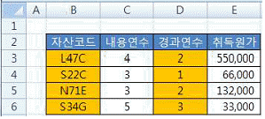
- =MOD(COLUMNS($B3),2)=0
- =MOD(COLUMNS(B3),2)=0
- =MOD(COLUMN($B3),2)=0
- =MOD(COLUMN(B3),2)=0
(정답률: 39%)
23. 아래의 워크시트에서 전체 평균 셀[E5]의 값이 85가 되도록 ‘이대한’의 1월 값 [B3]셀을 변경하고자 한다. 다음 중 [목표값 찾기] 기능 실행을 위한 수식 셀, 찾는 값, 값을 바꿀 셀의 지정이 순서대로 옳게 나열된 것은?
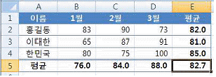
- $B$3, 85, $E$5
- $E$5, 85, $B$3
- $E$5, $E$4, $B$3
- $B$3, $E$4, $E$5
(정답률: 65%)
24. 다음 중 아래 그림의 리본 메뉴에 대한 설명으로 옳지 않은 것은?
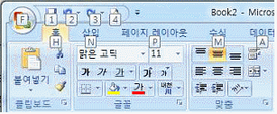
- 그림과 같이 리본 메뉴에 바로 가기 키를 나타내려면 <Shift>+<F10>키를 누른다.
- 오른쪽 방향키(→)를 누르면 활성화된 탭이 [홈] 탭에서 [삽입] 탭으로 변경된다.
- [탭] 및 [명령] 간에 이동할 때도 키보드를 사용할 수 있으며, 그림과 같은 상태에서 <N>키를 누르면 [삽입] 탭으로 변경된다.
- [빠른 실행 도구 모음]에 명령이 추가되면 일련번호로 바로 가기 키가 부여된다.
(정답률: 51%)
25. 다음 중 아래 [시나리오 관리자] 대화상자의 각 버튼에 대한 설명으로 옳지 않은 것은?
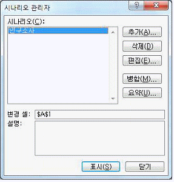
- 표시 : 선택한 시나리오에 대해 결과를 표시한다.
- 편집 : 선택한 시나리오를 변경한다.
- 병합 : 다른 워크시트의 시나리오를 통합하여 함께 관리한다.
- 요약 : 시나리오에 대한 요약 보고서나 피벗 테이블을 작성한다.
(정답률: 65%)
26. 다음 중 엑셀의 다양한 데이터 입력 방법에 대한 설명으로 옳지 않은 것은?
- 하나의 셀에 여러 줄을 입력할 때는 <Alt>+<Enter> 키를 눌러 줄 바꿈을 한다.
- 선택한 범위에 동일한 데이터를 한 번에 입력할 때에는 입력 후 바로 <Ctrl>+<Enter>키를 누른다.
- 배열 수식을 작성할 때는 수식 입력 후 <Ctrl>+<Shift>+<Enter>키를 누른다.
- 셀에 입력된 수식의 결과가 아닌 수식 자체를 보기 위해서는 <Alt>+<~>키를 누른다.
(정답률: 63%)
27. 다음 중 사용자 지정 표시 형식에서 숫자 형식 지정에 관한 설명으로 옳지 않은 것은?
- ? : 데이터를 공백으로 구분
- 0 : 숫자의 자릿수가 서식에 지정된 자릿수보다 적으면 유효하지 않은 0을 표시
- # : 입력한 숫자의 자릿수가 소수점 위쪽 또는 아래쪽에서 서식에 지정된 # 기호보다 적은 경우 추가로 0을 표시하지 않음
- , : 1000 단위마다 구분 기호로 콤마 표시
(정답률: 60%)
28. 아래 그림과 같이 발령부서[C2:C11]는 부서명[E2:E4]의 데이터 값을 번호[A2:A11]를 기준으로 순서대로 반복하여 배정하고자 한다. 다음 중 [C2] 셀에 입력할 수식으로 옳은 것은?
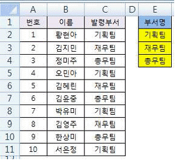
- =INDEX($E$2:$E$4, MOD(A2,3))
- =INDEX($E$2:$E$4, MOD(A2,3)+1)
- =INDEX($E$2:$E$4, MOD(A2-1,3)+1)
- =INDEX($E$2:$E$4, MOD(A2-1,3))
(정답률: 61%)
29. 다음 중 [찾기 및 바꾸기] 대화상자의 ‘찾기’ 기능에 대한 설명으로 옳지 않은 것은?(원본 그림 파일이 너무 커서 문제 풀기에 필요한 부분만 잘라내었습니다. 참고하세요.)
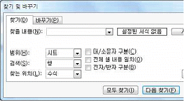
- [서식] 단추를 이용하면 특정 셀의 서식을 선택하여 동일한 셀 서식이 적용된 셀을 찾을 수도 있다.
- ‘찾을 내용’으로 숫자, 특수문자, 한자 등을 입력하여 찾을 수 있으나 *와 ?는 와일드카드 문자이므로 사용할 수 없다.
- ‘찾는 위치’는 수식, 값, 메모 중 선택하여 찾을 수 있다.
- ‘검색’에서 행 방향을 우선하여 찾을 것인지 열 방향을 우선하여 찾을 것인지를 지정할 수 있다.
(정답률: 76%)
30. 다음 중 아래 차트의 종류에 대한 설명으로 가장 적절한 것은?
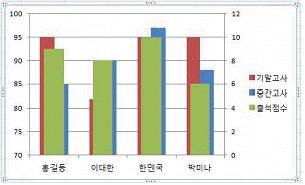
- 각 항목의 값들이 항목 합계의 비율로 표시되므로 중요한 요소를 강조할 때 사용한다.
- 특정 데이터 계열의 값이 다른 계열의 값과 현저하게 차이가 날 경우나 두 가지 이상의 데이터 계열을 가진 차트에 사용하면 편리하다.
- 두 개 이상의 데이터 계열을 갖는 차트에서 시간에 따른 특정 데이터 계열을 강조하고자 할 때 사용하면 편리하다.
- 각 항목 간의 값을 막대의 길이로 비교, 분석하는 누적 세로 막대형 차트이다.
(정답률: 52%)
31. 다음 중 아래의 데이터를 이용하여 계산할 현재가치 [D3]의 수식으로 옳은 것은?
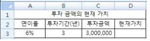
- =PV(A3/12,B3*12,,C3)
- =PV(A3/12,B3/12,,C3)
- =PV(A3/12,B3,,C3)
- =PV(A3,B3,,C3)
(정답률: 67%)
32. 다음 중 아래의 괄호( )안에 들어갈 기능으로 옳은 것은?
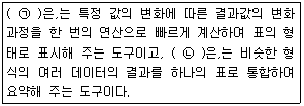
- (ㄱ) : 데이터 표 (ㄴ) : 통합
- (ㄱ) : 정렬 (ㄴ) : 시나리오 관리자
- (ㄱ) : 부분합 (ㄴ) : 피벗 테이블
- (ㄱ) : 해 찾기 (ㄴ) : 데이터 유효성 검사
(정답률: 78%)
33. 차트에 표시할 데이터 계열의 요소 간 값의 차이가 큰 경우 [수정 전] 차트와 같이 그 차이를 차트에 표시하기가 어려운데, [수정 후] 차트처럼 변경하면 값의 차이를 표시 할 수 있게 된다. 다음 중 [수정 전] 차트를 [수정 후]와 같이 변경하기 위한 축 옵션으로 옳은 것은?
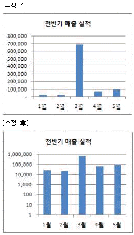
- 최소값과 최대값을 각각 1과 1,000,000으로 설정한다.
- 로그 눈금 간격을 10으로 설정한다.
- 주단위를 1,000,000으로 설정한다.
- 표시 단위를 백만으로 설정한다.
(정답률: 68%)
34. 다음 중 A열의 글꼴 서식을 ‘굵게’로 설정하는 매크로로 옳지 않은 것은?
- Range("A:A").Font.Bold = True
- Columns(1).Font.Bold = True
- Range("1:1").Font.Bold = True
- Columns("A").Font.Bold = True
(정답률: 66%)
35. 다음 중 아래 프로시저에 대한 설명으로 옳지 않은 것은?
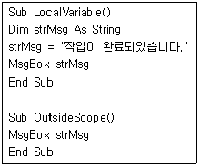
- LocalVariable()에서 strMsg를 문자열 변수로 선언 하였다.
- LocalVariable()에서 변수 strMsg에 "작업이 완료되었습니다."라는 문자열을 대입시킨다.
- LocalVariable()에서 변수 strMsg 내용을 MsgBox를 이용해 대화상자에 표시한다.
- OutsideScope()에서도 LocalVariable()에서 선언된 strMsg 변수가 적용되어 MsgBox를 이용해 대화 상자에 표시한다.
(정답률: 60%)
36. 워크시트에서 [A1:D2] 영역을 블록 설정하고, ‘={1, 2, 3, 4; 6, 7, 8, 9}’을 입력한 후 <Ctrl>+<Shift>+<Enter>키를 눌렀다. 다음 중 [B2] 셀에 입력되는 값은?
- 0
- 4
- 7
- 없다.
(정답률: 68%)
37. 다음 중 아래 그림과 같이 [A1:C19] 영역을 복사하여 부분합의 요약된 결과만 [A23:C27] 영역에 붙여넣기 위한 방법으로 옳은 것은?
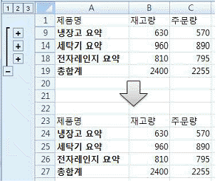
- [A1:C19] 영역 선택 → [홈]-[편집]-[찾기 및 선택]-[이동 옵션]에서 '화면에 보이는 셀만'을 선택한 후 [확인] 클릭 → 복사 → 붙여넣기
- [A1:C19] 영역 선택 → [홈]-[편집]-[찾기 및 선택]-[이동 옵션]에서 '현재 셀이 있는 영역'을 선택한 후 [확인] 클릭 → 복사 → 붙여넣기
- [A1:C19] 영역 선택 → 복사 → 선택하여 붙여넣기 → '내용이 있는 셀만 붙여넣기'를 선택한 후 [확인] 클릭
- [A1:C19] 영역 선택 → 복사 → 선택하여 붙여넣기 →‘값’을 선택한 후 [확인] 클릭
(정답률: 47%)
38. 다음 중 [페이지 설정] 대화상자의 [시트] 탭에 대한 설명으로 옳지 않은 것은?
- 인쇄 영역을 지정하지 않으면 기본적으로 워크시트의 모든 내용을 인쇄한다.
- 반복할 행은 “$1:$3”과 같이 행 번호로 나타낸다.
- 메모의 인쇄 방법을 ‘시트 끝’으로 선택하면 원래 메모가 속한 각 페이지의 끝에 모아 인쇄된다.
- 여러 페이지가 인쇄될 경우 열 우선을 선택하면 오른쪽 방향으로 인쇄를 마친 후에 아래쪽 방향으로 진행된다.
(정답률: 48%)
39. 다음 중 수식의 결과가 옳지 않은 것은?
- =FIXED(3456.789,1,FALSE) → 3,456.8
- =EOMONTH(DATE(2015,2,25),1) → 2015-03-31
- =CHOOSE(ROW(A3:A6), "동","서","남",2015) → 남
- =REPLACE("February",SEARCH("U","Seoul-Unesco"), 5,"") → Febru
(정답률: 70%)
40. 다음 중 엑셀의 메뉴인 [데이터]탭 [외부 데이터 가져 오기]그룹을 이용하여 가져올 수 없는 파일 형식은?
- Access(*.mdb)
- 웹(*.htm)
- XML 데이터(*.xml)
- MS-Word(*.doc)
(정답률: 65%)
3과목: 데이터베이스 일반
41. 다음 중 개체 관계 모델(Entity Relationship Model)에 관한 설명으로 옳지 않은 것은?
- 개념적 설계에 가장 많이 사용되는 모델로 개체 관계도(ERD)가 가장 대표적이다.
- 개체집합과 관계집합으로 나누어서 개념적으로 표시하는 방식으로 특정 데이터베이스 관리 시스템(DBMS)을 고려한 것은 아니다.
- 데이터를 개체(entity), 관계(relationship), 속성(attribute)과 같은 개념으로 표시한다.
- 개체(entity)는 가상의 객체나 개념을 의미하고, 속성(attribute)은 개체를 묘사하는데 사용될 수 있는 특성을 의미한다.
(정답률: 46%)
42. 다음 중 SQL문의 각 WHERE절에 대한 설명으로 옳지 않은 것은?
- WHERE 부서 = '영업부' → 부서 필드의 값이 '영업부' 인 레코드들이 검색됨
- WHERE 나이 Between 28 in 40 → 나이 필드의 값이 29에서 39 사이인 레코드들이 검색됨
- WHERE 생일 = #1996-5-10# → 생일 필드의 값이 1996-5-10인 레코드들이 검색됨
- WHERE 입사년도 = 2014 → 입사년도 필드의 값이 2014인 레코드들이 검색됨
(정답률: 74%)
43. 다음 중 성적(학번, 이름, 학과, 점수) 테이블의 레코드 수가 10개, 평가(학번, 전공, 점수) 테이블의 레코드 수가 5개일 때, 아래 SQL의 결과에 대한 설명으로 옳은 것은?
- 쿼리 실행 결과의 필드 수는 모든 테이블의 필드를 더한 개수만큼 검색된다.
- 쿼리 실행 결과의 총 레코드 수는 15개이다.
- 쿼리 실행 결과의 필드는 평가.학번, 평가.전공, 평가.점수이다.
- 쿼리 실행 결과는 학번의 내림차순으로 정렬되어 표시된다.
(정답률: 56%)
44. 다음 중 폼이나 보고서에서 사용되는 조건부 서식 기능에 대한 설명으로 옳지 않은 것은?(2015년 문제임을 감안하고 푸시기 바랍니다. 오피스 2007 기준문제 입니다.)
- 조건을 지정할 때 와일드 카드 문자(*, ?)는 사용 할 수 없다.
- 조건부 서식은 레이블 컨트롤에 필드 값이나 식을 기준으로만 설정할 수 있다.
- 각 컨트롤에 대해 조건을 3개까지 지정할 수 있으며, 조건별로 다른 서식을 지정할 수 있다.
- 조건에 맞는 경우 적용할 서식과 조건에 맞지 않을 경우 적용할 기본 서식을 함께 지정할 수 있다.
(정답률: 29%)
45. 다음 중 텍스트 상자 컨트롤에 대한 설명으로 옳지 않은 것은?
- 일반 텍스트 상자는 컨트롤 원본 속성이 테이블의 필드명을 제외한 일반 텍스트가 입력된 경우이다.
- 바운드 텍스트 상자는 컨트롤 원본 속성이 테이블의 필드명으로 지정된 경우이다.
- 언바운드 텍스트 상자는 컨트롤 원본 속성이 비어 있는 경우이다.
- 계산 텍스트 상자는 컨트롤 원본 속성이 식으로 입력 되어 있는 경우이다.
(정답률: 42%)
46. 다음 중 컨트롤의 이동과 복사 방법에 대한 설명으로 옳은 것은?
- 다른 구역에서 복사하여 붙여넣으면 붙여넣기 구역의 오른쪽 위에 붙여진다.
- 같은 구역내에서 복사하여 붙여넣으면 복사한 컨트롤의 바로 아래에 붙여진다.
- <Ctrl> 키를 누른 상태에서 이동하면 다른 컨트롤과 세로 및 가로 맞춤을 유지할 수 있다.
- <Shift> 키를 누른 상태에서 방향키를 눌러 컨트롤의 위치를 변경할 수 있다.
(정답률: 49%)
47. 다음 중 아래와 같은 테이블 구조를 가진 데이터베이스에서 부서명이 ‘인사부’인 직원들의 정보를 조회하는 SQL문으로 가장 적절한 것은?
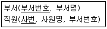
- SELECT * FROM 부서 WHERE 부서번호 IN (SELECT 부서번호 FROM 직원)
- SELECT * FROM 직원 WHERE 부서번호 IN (SELECT 부서번호 FROM 부서 WHERE 부서명='인사부')
- SELECT 직원.* FROM 직원, 부서 WHERE 부서.부서명 = '인사부'
- SELECT * FROM 부서 WHERE 부서명='인사부' ORDER BY 부서번호
(정답률: 57%)
48. 다음 중 전체 페이지가 5페이지이고 현재 페이지가 2페이지인 보고서에서 표시되는 식과 결과가 올바른 것은?
- 식 : =[Page] → 결과 : 2/5
- 식 : =[Page] & "페이지" → 결과 : 2페이지
- 식 : =[Page] & "중 " & [Page] → 결과 : 5중 2
- 식 : =Format([Page], "000") → 결과 : 0⑤
(정답률: 67%)
49. 다음 중 테이블 간의 관계 설정에서 일대일 관계가 성립하는 것은?
- 양쪽 테이블의 연결 필드가 모두 중복 불가능의 인덱스나 기본키로 설정되어 있는 경우
- 어느 한쪽의 테이블의 연결 필드가 중복 불가능의 인덱스나 기본키로 설정되어 있는 경우
- 오른쪽 관련 테이블의 연결 필드가 중복 가능한 인덱스나 후보키로 설정되어 있는 경우
- 양쪽 테이블의 연결 필드가 모두 중복 가능한 인덱스나 후보키로 설정되어 있는 경우
(정답률: 58%)
50. 다음 중 외부 데이터로 Access 파일을 가져오는 경우에 관련된 설명으로 옳지 않은 것은?
- 테이블의 관계도 함께 복사할 수 있다.
- Access 개체는 테이블과 쿼리 개체만 복사할 수 있다.
- 테이블의 정의만 가져오는 경우 데이터가 없는 빈 테이블이 만들어진다.
- 원본 개체와 같은 이름의 개체가 대상 데이터베이스에 이미 있으면 가져오기 개체의 이름에 숫자(1, 2, 3 등)가 추가된다.
(정답률: 56%)
51. 다음 중 관계형 데이터 모델에서 데이터의 정확성과 일관성을 보장하기 위한 것은?
- 릴레이션
- 관계 연산자
- 무결성 제약조건
- 속성의 집합
(정답률: 74%)
52. 다음 중 보고서의 각 구역에 관한 설명으로 옳지 않은 것은?
- 보고서 머리글은 보고서의 맨 앞에 한 번 출력되며, 일반적으로 로고나 제목 및 날짜와 같이 표지에 나타나는 정보를 추가한다.
- 그룹 머리글은 각 새 레코드 그룹의 맨 앞에 출력되며, 그룹 이름을 출력하려는 경우에 사용한다.
- 본문은 레코드 원본의 모든 행에 대해 한 번씩 출력되며, 보고서의 본문을 구성하는 컨트롤이 여기에 추가된다.
- 보고서 바닥글은 모든 페이지의 맨 끝에 출력되며, 페이지 번호 또는 페이지별 정보를 표시하려는 경우에 사용한다.
(정답률: 62%)
53. 다음 중 필드의 각 데이터 형식에 대한 설명으로 옳지 않은 것은?
- 통화 형식은 소수점 이하 4자리까지의 숫자를 저장 할 수 있으며, 기본 필드 크기는 8바이트이다.
- 예/아니오 형식은 Yes/No, True/False, On/Off 등 두 값 중 하나만 입력하는 경우에 사용하는 것으로 기본 필드 크기는 1비트이다.
- 일련번호 형식은 새 레코드를 만들 때 자동으로 생성되는 고유 값으로 저장된다.
- 메모 형식은 텍스트 및 숫자 데이터가 최대 255자 까지 저장된다.
(정답률: 68%)
54. 다음 중 읽기 전용 폼을 만들기 위한 폼과 컨트롤의 속성 설정이 옳지 않은 것은?
- [편집 가능] 속성을 ‘아니오’로 설정한다.
- [삭제 가능] 속성을 ‘아니오’로 설정한다.
- [잠금] 속성을 ‘아니오’로 설정한다.
- [추가 가능] 속성을 ‘아니오’로 설정한다.
(정답률: 70%)
55. 폼의 각 컨트롤에 포커스가 위치할 때 입력모드를 '한글' 또는 '영숫자반자'로 각각 지정하고자 한다. 다음 중 이를 위해 설정해야 할 컨트롤 속성은?
- 엔터키 기능(EnterKey Behavior)
- 상태 표시줄(StatusBar Text)
- 탭 인덱스(Tab Index)
- 입력 시스템 모드(IME Mode)
(정답률: 74%)
56. 다음 중 Application 개체의 속성과 메서드에 대한 설명으로 옳은 것은?
- CurrentData : 현재 액세스 프로젝트나 액세스 데이터베이스에 대한 참조
- Run : 사용자 정의 Function 또는 Sub 프로시저를 수행
- CurrentProject : 현재 데이터베이스에 저장된 개체를 참조
- DoCmd : 인수로 지정된 명령어를 실행
(정답률: 49%)
57. 다음 중 SQL문의 각 예약어에 대한 설명으로 옳지 않은 것은?
- SQL문에서 검색 결과가 중복되지 않게 표시하기 위해서 'DISTINCT' 를 입력한다.
- ORDER BY문을 사용할 때에는 HAVING절을 사용하여 조건을 지정한다.
- FROM절에는 SELECT문에 나열된 필드를 포함하는 테이블이나 쿼리를 지정한다.
- 특정 필드를 기준으로 그룹화하여 검색할 때에는 GROUP BY문을 사용한다.
(정답률: 67%)
58. 다음 중 아래 그림과 같이 ‘성명’필드가 ‘txt검색’ 컨트롤에 입력된 문자를 포함하는 레코드만을 표시하도록 하는 프로시저의 코드로 옳은 것은?(원본 그림이 너무 커서 문제 풀기에 필요한 부분만 잘라내었습니다. 참고하세요.)
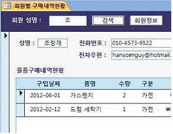
- Me.Filter = "성명 = '*" & txt검색 & "*'"
Me.FilterOn = True - Me.Filter = "성명 = '*" & txt검색 & "*'"
Me.FilterOn = False - Me.Filter = "성명 like '*" & txt검색 & "*'"
Me.FilterOn = True - Me.Filter = "성명 like '*" & txt검색 & "*'"
Me.FilterOn = False
(정답률: 62%)
59. 다음 중 데이터베이스에서 인덱스를 사용하는 목적으로 가장 적절한 것은?
- 레코드 검색 속도 향상
- 데이터 독립성 유지
- 중복성 제거
- 일관성 유지
(정답률: 66%)
60. 폼의 머리글에 아래와 같은 도메인 함수 계산식을 사용하는 컨트롤을 삽입하였다. 다음 중 계산 결과 값에 대한 설명으로 옳은 것은?
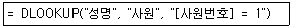
- 성명 테이블에서 사원 번호가 1인 데이터의 성명 필드에 저장되어 있는 값
- 성명 테이블에서 사원 번호가 1인 데이터의 사원 필드에 저장되어 있는 값
- 사원 테이블에서 사원 번호가 1인 데이터의 성명 필드에 저장되어 있는 값
- 사원 테이블에서 사원 번호가 1인 데이터의 사원 필드에 저장되어 있는 값
(정답률: 60%)